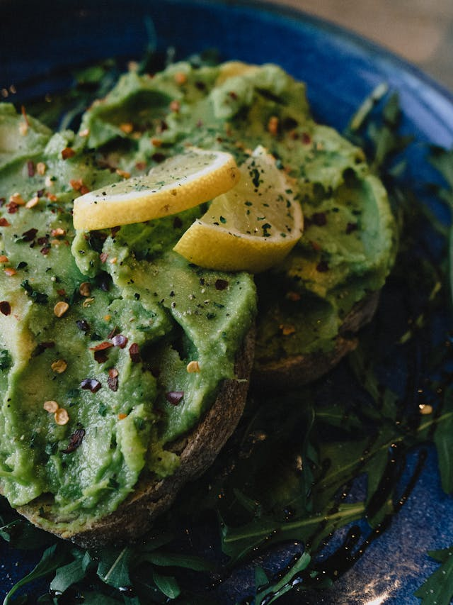

Home
Avocado Toast

A versatile dish that is easy to make, avocado toast is sure to be a hit!
Ingredients:
Steps:
Peel skin and remove the pit
Put it in a bowl with some olive oil, lemon juice, salt, pepper, and a touch of garlic powder.
Mash using a fork or spoon, then spread over toast of your choice.
Top with microgreens, smoked salmon, or sliced hardboil eggs for extra protein.
Note: It's all about the avocados you choose: make sure they're soft and ripe, but not too mushy.